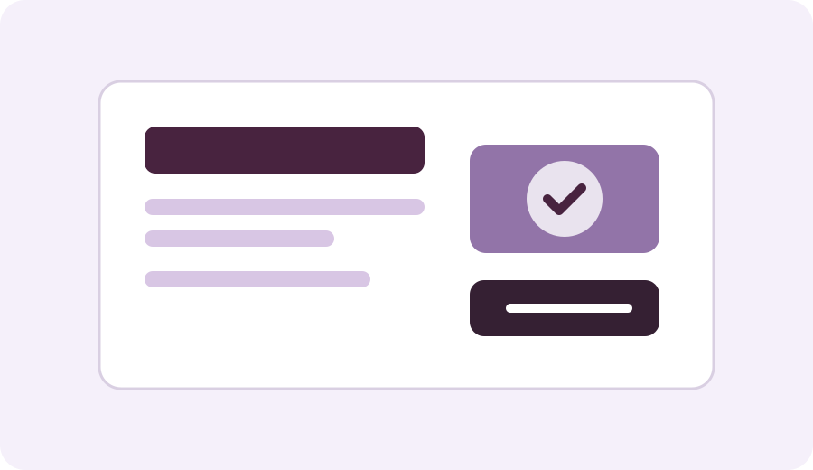
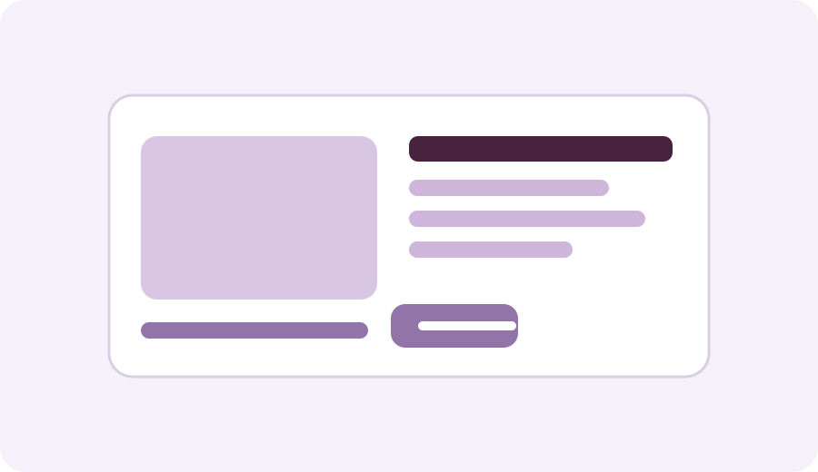

LEARNING PROJECT
Student Performance Analysis
Exploring fictional student assessment data to understand academic performance, compare subject averages, identify high and low scores, and examine grade distribution.
Download sample workbookProjects / experiments in progress
LEARNING PROJECT
Exploring fictional student assessment data to understand academic performance, compare subject averages, identify high and low scores, and examine grade distribution.
Download sample workbook
Problem: Students often struggle to keep track of assignments, revision sessions, and coursework deadlines.
Solution: A simple task manager that lets students add tasks, organise them by category, mark completion, and save progress in the browser.
Technologies: HTML, CSS, JavaScript
Status: Active learning project
View details
Problem: Students need a professional online presence to present their profile, growth, and academic journey.
Solution: A responsive website that showcases learning progress, project work, academic goals, and contact information.
Technologies: HTML5, CSS3, JavaScript
Status: In development
View details